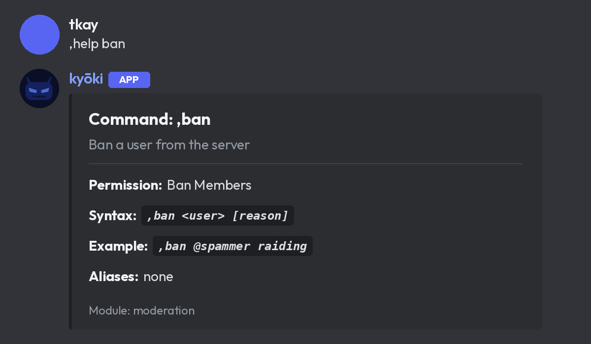
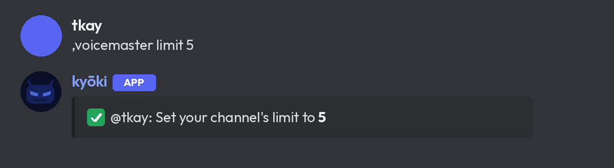

Setup guides for the commands kyōki actually has. The default prefix is a comma, as in ,ban. Change it with ,prefix. Mentioning the bot always works.
No guides match that search.
Moderation
Each command checks a permission. Slash versions — /ban, /kick, /timeout, /purge, and /warn — exist alongside the prefix commands. On slash timeout, a duration of 0 removes a timeout.

Bans, kicks, and timeouts
,kick <member> [reason] — Kick Members.
,ban <user> [reason] / ,unban <user id> [reason] — Ban Members. ,baninfo shows why a user is banned and by whom; ,banlist lists every banned user.
,tempban <user> <duration> [reason] — Ban Members. ,tempban list shows running tempbans; ,tempban cancel <user> ends one early and unbans.
,hardban <user> [reason] — Administrator. Bans someone and re-bans them if anyone unbans them. ,hardban list lists them; ,hardban remove lifts a hardban and unbans (Administrator).
,massban <ids or mentions...> — Administrator. Bans up to 200 users by ID at once (asks to confirm).
,softban <member> [reason] — Ban Members. Bans and unbans to wipe 7 days of messages.
,warn <member> [reason] DMs the member the reason. ,warnings (alias ,warns) views them; ,clearwarns <member> clears all. Moderate Members. To remove one warning, use ,delwarn in Cases.
Purge
Manage Messages. Aliases: ,clear, ,c. ,purge <amount> [member] bulk-deletes messages, optionally from one member. Filters include after, before, between, bots, commands, contains, embeds, emojis, endswith, files, humans, images, invites, links, mentions, reactions, startswith, stickers, user (even if they left), and webhooks. Syntax for each is on the commands page.
Channels
,lock / ,unlock — stop or allow talking in this channel. ,hide [channel] / ,unhide hide or show a channel from everyone. ,slowmode [seconds] (alias ,sm). ,topic <text | clear> sets or clears this channel’s topic. Manage Channels.
,lockdown all [reason] locks every text channel at once (background job). ,lockdown end unlocks the channels it locked. ,lockdown ignore <channel> toggles a channel lockdown skips; ,lockdown ignored lists them.
,nuke — Administrator. Deletes and recreates this channel empty (asks to confirm).
Mutes and role actions
,muterole create makes (or reuses) a muted role and blocks it in every channel. ,muterole set / ,muterole unset use or stop using a mute role. Manage Roles.
,rolemute <member> [duration] [reason] mutes with the mute role, optionally for a time; ,unrolemute removes it. Moderate Members.
,imute / ,iunmute stop or allow images and embeds. ,rmute / ,runmute stop or allow reactions. Manage Messages; optional channel.
,strip <member> [reason] — Administrator. Removes all of a member’s roles (saved for restore). ,restore <member> — Manage Roles. Gives back roles saved when someone left or was stripped.
,jail <member> [reason] locks the member in a jail channel and saves their roles.
,unjail <member> frees them and gives those roles back.
Cases
Moderation cases, history, and private staff notes. Most commands need Moderate Members; deleting or clearing cases and notes needs Manage Server. Changing a case’s reason needs Moderate Members for your own cases, or Manage Server.
,case <number> views a case. ,case list shows every case, newest first. ,case reason <number> <reason> changes a reason. ,case delete <number> deletes one. ,case export downloads every case as a spreadsheet file.
,cases <user> shows a user’s cases. ,cases mod <moderator> shows cases made by a moderator. ,cases clear <user> deletes all of a user’s cases (asks to confirm).
,history <user> shows a user’s status, warnings, and cases in one place. ,modstats [moderator] shows how many actions a moderator took.
,delwarn <user> <number> removes one warning from a member.
Auto-moderation filters. You need Manage Server. Alias: ,automod or ,am. A filter always deletes a matching message; ,filter action also sets whether offenders are warned, timed out, or kicked.
Turn a filter on or off: ,filter caps (optional percent and min letters), emoji (limit), invites, links, massmention (limit), newlines (max lines), repeat (times), spam (messages and seconds), and zalgo.
,filter words add <words> blocks words (comma separated; your message is deleted). list shows blocked words (spoilered); remove unblocks; clear unblocks every word (asks to confirm).
,filter whitelist add <domain> allows links to a domain and its subdomains when the link filter is on. list and remove manage that list.
,filter exempt add <role | channel> makes a role, channel, or category skip the filters. list and remove manage exemptions.
,filter log <channel | off> sets where filter hits are logged. ,filter timeout <duration> sets how long the timeout action lasts. ,filter status shows every filter’s settings. ,filter test <text> checks which text filters a message would trip. ,filter reset turns everything off and clears lists (asks to confirm).
Security
Antinuke and antiraid are off by default. Nothing in this module runs until you turn it on.
Antinuke
Server owner only. Alias: ,an. Stops rogue admins from nuking the server.
,antinuke on / ,antinuke off
,antinuke punish <ban | kick | strip> — alias punishment
,antinuke threshold <actions> [seconds=10] — default is 3 actions in 10s. Alias: limit
,antinuke whitelist [user] toggles a trusted user or bot. Aliases: wl, trust
Antiraid
Manage Server. Aliases: ,raid. Stops mass-join raids and brand-new accounts.
,antiraid age <days | off> sets a minimum account age. Alias: accountage
,antiraid action <kick | ban> — alias punish
,antiraid end ends raid mode early. Alias: stop
Welcome & Goodbye
You need Manage Server. Text (and embed JSON) can use {user}, {name}, {server}, {count}, and {avatar}.
Welcome
,welcome <channel | message <text> | test | delete>
,welcome #channel sets where join messages go.
,welcome message <text or JSON> sets the text or an embed (see Embeds).
,welcome test sends a preview. ,welcome delete removes the join message.
Goodbye
,goodbye works the same way. ,leave is an alias.
Welcome card
,welcome card on adds a Pillow image card to welcome messages. ,welcome card off turns it off. ,welcome card test [member] previews the card here. Alias: ,welcome card image on the parent command.
Logging
You need Manage Server. ,log <channel | off> sends server logs to a channel, or turns them off. Aliases: ,logs, ,logging.
Prefix
The default prefix is ,. Mentioning the bot, as in @kyōki help, always works.
,prefix shows the current prefix. ,prefix ! changes it (Manage Server). ,prefix reset puts it back to a comma. Alias: ,setprefix.
Setup wizard
Administrators can run ,setup for a 5-step button wizard that covers logs, welcome, VoiceMaster, tickets and automod. It shows a summary first. Aliases: ,wizard, ,quicksetup.
Embeds
You need Manage Messages. ,embed <json> sends a custom embed in the current channel. ,embed send #channel <json> sends it somewhere else. Aliases: ,ce, ,createembed.
The JSON is Discord’s standard embed object. Color can be an integer or #hex; if you leave color out, kyōki uses plain gray (#2B2D31). timestamp can be ISO-8601 or "now". Code fences around the JSON are stripped. Also accepted: {"embed":{…},"content":"…"} and {"embeds":[{…}]} (the first embed is used).
The same format works in ,welcome message, ,goodbye message, ,ticket setup, and ,autoresponder add. Variables: {user}{name}{server}{count}{avatar}.
The embed builder copies this JSON, or a ready ,embed send command. The same format is also accepted by ,sticky add.
Sticky messages
Keep a message at the bottom of a channel. You need Manage Messages, except ,sticky clear, which needs Manage Server and asks to confirm. Alias: ,stickymessage.
,sticky add <channel> <text or embed JSON> adds a sticky. ,sticky edit <channel> <text or embed JSON> changes it.
,sticky every <channel> <messages> reposts after this many messages (1–100).
,sticky list shows every sticky. ,sticky view <channel> shows a sticky’s raw text. ,sticky remove <channel> removes one. ,sticky clear removes every sticky.
Tickets
Private support tickets with a button panel. Setup needs Manage Server; staff work uses the support role. Aliases: ,tickets, ,t.
Example panel
,ticket setup #channel [text or embed JSON] posts the Open Ticket panel. Alias: panel.
,ticket support @role sets who can see and claim tickets. Aliases: role, staff.
,ticket log #channel is where transcripts go (it defaults to the ,log channel). Aliases: logs, transcripts.
Inside a ticket, staff can ,ticket claim, ,ticket close (close saves a .txt transcript), ,ticket add @user, ,ticket remove @user, and ,ticket rename <name>.
Forms
You can ask up to five questions before a ticket opens. ,ticket form add [long:] [optional:] <question> [| hint] adds one (45 characters). ,ticket form remove, ,ticket form clear, ,ticket form title, and ,ticket form preview manage the form. Alias: ,ticket forms.
Roles
Button roles
You need Manage Roles. Aliases: ,br, ,buttonroles.
,buttonrole post <channel> <text> posts an embed to add role buttons to.
,buttonrole add <message> <role> [emoji] [label] adds a role button to kyōki’s message. ,buttonrole remove <message> <role> removes one; ,buttonrole list shows roles on a message’s buttons; ,buttonrole clear <message> removes every button.
,buttonrole unique <message> <on | off> lets members pick only one role from a message.
Role management
,role <member> <role> toggles a role on a member. ,role add / ,role remove give or take a role. Manage Roles, except ,role info, which needs no extra permission and shows a role’s full permissions and members.
Create and edit: ,role create <name> [#hex], ,role delete (asks to confirm), ,role rename, ,role color, ,role hoist, ,role mentionable, and ,role icon (boost level 2; emoji, url, attachment, or remove).
Mass jobs (background): ,role all [add | remove] <role> for every member, ,role humans for humans, ,role bots for bots, and ,role in [add | remove] <has role> <role> for everyone in another role. ,role status shows progress; ,role cancel stops the running job.
Nicknames
Manage Nicknames, except ,nick resetall, which needs Manage Server, asks to confirm, and runs as a background job.
,nick <member> [nickname] changes or resets a nickname.
,nick decancer <member> turns fancy unicode names into plain text. ,nick dehoist strips leading symbols like ! from names (background job).
,nick force <member> <nickname> locks a nickname so it changes back. ,nick forced lists forced nicknames; ,nick unforce unlocks one.
Reaction roles
Give roles when members react to a message. You need Manage Roles, except ,reactionrole reset, which needs Manage Server and asks to confirm. Aliases: ,rr, ,reactionroles.
,reactionrole add <message> <emoji> <role> links an emoji on a message to a role. ,reactionrole remove <message> <emoji> unlinks one.
,reactionrole list shows every reaction role. ,reactionrole clear <message> removes every reaction role from a message. ,reactionrole reset deletes every reaction role in the server.
,reactionrole unique <message> <on | off> lets members pick only one role from a message.
VoiceMaster
Manage Server is required to set it up. Alias: ,vm.

,voicemaster setup creates Join to Create and the interface panel.
Temporary voice channels are yours to control with the panel, or with ,voicemaster name, limit (0–99), permit, reject, and transfer.
,voicemaster interface [channel] reposts the control panel. ,voicemaster reset removes VoiceMaster.
Giveaways
You need Manage Server. Alias: ,gw. People enter with a button.
,giveaway start <duration> <winners> <prize> — alias create
,giveaway end [message id] ends it now. Alias: stop
,giveaway reroll [message id] [winners] picks new winners.
,giveaway list shows running giveaways.
Starboard
You need Manage Server. ,starboard #channel [threshold] [emoji] reposts popular messages there. ,starboard off turns it off. Aliases: ,sb, ,star.
Autoresponder
You need Manage Server. Aliases: ,autoresponse, ,autoreply.
,autoresponder add <trigger>, <response or embed JSON>
,autoresponder list
,autoresponder remove <trigger> — aliases delete, del
Levels
Levels start off. An admin turns them on with ,levels enable (Manage Server). XP already earned is kept if you later run ,levels disable.
The default level-up message is GG {user}, you reached **level {level}**. Message XP defaults to 15–25 every 60 seconds. Voice XP is on by default (2+ people in the channel, not deafened).
,rank [member] shows a rank card (level, XP, and server rank). ,rank background [navy | crimson | jade | gold] picks a background; the shop can unlock more.
,levels channel <channel | current | dm | off> sets where level-up messages go. ,levels message <text | reset> changes the text. ,levels test previews it.
,levels rate, ,levels cooldown, ,levels voice, ,levels ignore, ,levels multiplier, and ,levels reward control XP and role rewards. ,levels stack keeps every reward role or only the highest.
,levels settings lists every setting. ,levels export / ,levels import move XP as JSON. ,xp edits one member’s XP.
Virtual currency only. Members can earn, bank, shop, and (if the server leaves them on) gamble or rob. Admins configure it with ,economy (Manage Server). ,economy settings shows every setting.
Earn: ,daily, ,weekly, ,work, ,beg, ,crime, and ,rob <member>. ,cooldowns shows when those are available again.
,balance, ,deposit, ,withdraw, ,pay, ,ecotop, and ,transactions.
,shop, ,buy, ,sell, ,inventory, ,gift, and ,use. Admins add or edit items with ,shop add and ,shop edit.
Games: ,blackjack, ,coinflip, ,dice, ,highlow, ,roulette, ,rps, and ,slots. ,economy gambling and ,economy rob turn those on or off.
,verify <roblox username> links a Roblox account with a one-time code in the profile. ,unverify unlinks it. ,userinfo roblox shows someone’s linked account.
Lookups: ,roblox user, ,roblox avatar, ,roblox group, and ,roblox games.
Server setup (Manage Server): ,roblox role <role | off> for the verified role, ,roblox nickname <format | off>, and ,roblox bind / ,roblox unbind for group ranks. ,roblox binds shows the settings. ,roblox update re-checks roles and nickname.
,backup create [name] saves roles, categories, channels, overwrites and settings (max 10). ,backup list, ,backup info <id>, and ,backup delete <id> manage those files. ,backup load <id> is Server Owner only: it adds everything missing from a backup, never deletes, and asks to confirm.
Built-in layouts are gaming, community, and anime. ,template list shows them. ,template preview <gaming | community | anime> shows what a layout would add. ,template apply <gaming | community | anime> (Server Owner) adds missing roles and channels, asks to confirm, and does not delete existing ones. Details of each layout are on the setup page.
Fun
No special permission. ,8ball, ,choose, ,rate, ,ship, ,fact, ,cat, ,dog, and ,meme (a random meme from Reddit, no NSFW). Reaction GIFs like ,hug and ,pat can target a member and count how many times it’s happened; ,interactions shows those counts. Full syntax is on the commands page.
Lookup
,botinfo shows kyōki’s stats. ,calc, ,define, ,wiki, ,urban, ,weather (Open-Meteo), ,color, ,time, ,channelinfo, ,inviteinfo, ,membercount, ,servericon, ,serverbanner, ,firstmessage, and ,uptime look things up. ,invite gives a link to add kyōki. Full syntax is on the commands page.
Emoji & stickers
Adding, removing or renaming needs Manage Expressions. ,emoji add, ,emoji remove, ,emoji rename, ,emoji list, ,emoji info, and ,emoji enlarge. ,steal copies custom emojis (or a replied sticker) into the server. Stickers use ,sticker add, ,sticker steal, ,sticker remove, ,sticker rename, ,sticker list, and ,sticker info.
Alerts
,youtube add follows a YouTube channel (link, @handle, or UC id) and posts new uploads in a Discord channel. No API key. ,youtube list, ,youtube remove, ,youtube message, ,youtube role, and ,youtube test manage those alerts.
Twitch alerts aren’t available yet.,twitch can save streamers and show status, but go-live alerts stay off until a Twitch developer app is set up.
Feeds
,feed add <r/subreddit | feed url> <#channel> relays new Reddit posts or any RSS/Atom feed to a channel. ,feed list, ,feed remove, ,feed channel, and ,feed test manage feeds. Aliases: ,rss, ,reddit.
Reddit feeds may be unreliable. RSS and Atom feeds work.
Modmail
Members DM kyōki and staff answer in a thread. ,modmail setup [channel] (Manage Server) chooses the staff channel; an empty channel turns it off. Staff can ,modmail reply, ,modmail areply (as “Staff”), ,modmail contact, ,modmail close, ,modmail list, ,modmail block, and ,modmail unblock. ,modmail anonymous and ,modmail greeting set defaults.
Suggestions
Members post with ,suggest <idea>. ,suggestions channel sets where they go (empty turns off). Staff can approve, deny, consider, or mark one implemented, and ,suggestions list or ,suggestions view to browse them. ,suggestions anonymous and ,suggestions threads are optional.
Invite tracking
,invites shows how many people someone invited. ,invites leaderboard, ,invites invited, and ,invites inviter fill in the details. ,invites log posts who invited each new member. Admins can add, remove, or reset counts and set ,invites fakedays. ,invites status says whether tracking works here.
Tags
Saved replies. ,tag add <name> <content> (text or embed JSON). ,tag command <name> on lets ,name run that tag directly. Owners or Manage Messages can edit, rename, or remove tags; ,tag claim takes over a tag whose owner left.
Birthdays
,birthday set <date> saves your birthday (it is used in every server). ,birthday channel, ,birthday message, ,birthday role, and ,birthday timezone set announcements. ,birthday list shows upcoming ones.
Bump reminders
,bumpreminder on reminds the server to use Disboard’s /bump every 2 hours. You can set the channel, role, message, and a thanks reply, and see a leaderboard.
Confessions
,confess <text> posts an anonymous confession and deletes your message. /confess is fully private. ,confessions channel turns the feature on. Staff can set a log channel, ,confessions trace a post (that’s logged), ban or unban authors, and delete a confession.
Counters
Voice channels that show live server stats. ,counter add <type> creates one; ,counter types lists what they can show. ,counter refresh updates them (once per 5 minutes).
Counting
A counting game: go up one at a time, no doubles. ,counting channel sets where it runs. ,counting stats, ,counting leaderboard, ,counting setnumber, and ,counting reset manage the game.
Polls
,poll [duration] <question> | <option> | <option>... makes a button poll (Yes/No if you give no options). ,poll end, ,poll list, and ,poll results close, list, or show results.
Temp roles
,temprole add <member> <role> <duration> gives a role that removes itself later. You can extend, list, or take one off early (Manage Roles).
Reaction triggers
,reactiontrigger add <emoji> <trigger> auto-reacts when a message contains a word or phrase (Manage Messages). List, remove, or clear them with the other subcommands.
Top.gg
,vote is how members vote for kyōki on top.gg and check a streak. ,voterewards can thank voters with coins or a temporary role; that needs the top.gg listing, and rewards stay off until you turn them on. This page does not invent a vote link.
Utility
,userinfo, ,serverinfo, ,avatar, ,banner, and ,roleinfo look up a member, the server, an avatar, a banner, or a role. Nickname commands now live under Roles.
,snipe / ,editsnipe show recently deleted or pre-edit messages. ,clearsnipe (Manage Messages) clears snipes in the channel.
,afk [reason] sets a status that replies when you’re pinged.
,remind <duration> <text>, ,remind list, and ,remind delete <n>.
,ping checks latency. ,help [command | section] lists commands or details on one. /help is the slash version. Both are also listed under Info on the commands page.

 Moderation
Moderation